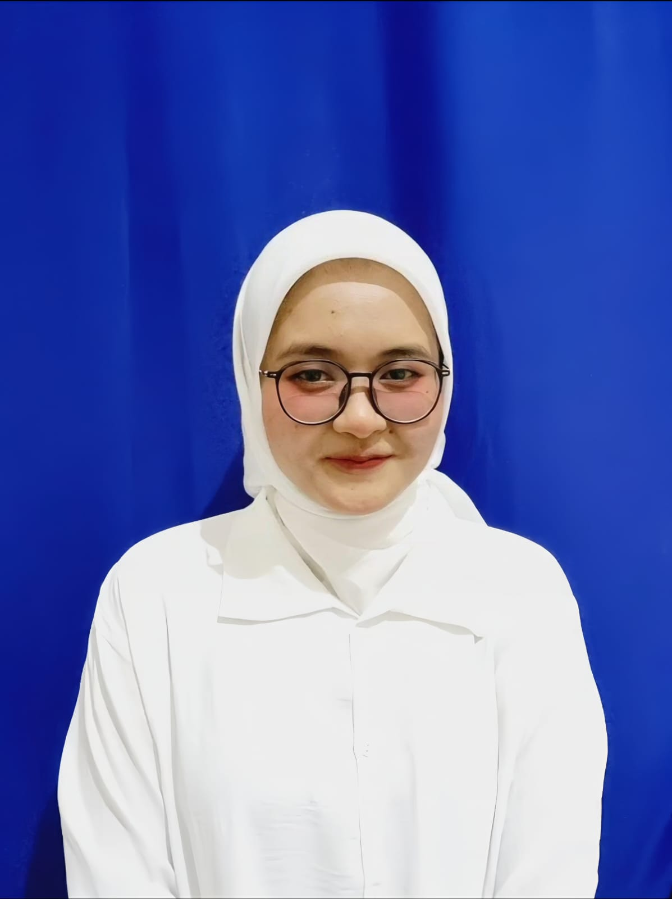
"Assalamu’alaikum Warahmatullahi Wabarakatuh."
Puji syukur ke hadirat Allah SWT atas rahmat-Nya sehingga website resmi SMA Qolqolah 89 Blitar dapat hadir sebagai media informasi dan komunikasi sekolah. Website ini kami harapkan mampu mendukung keterbukaan informasi, memperkuat sinergi antara sekolah, orang tua, dan masyarakat, serta menjadi sarana publikasi kegiatan dan prestasi sekolah. SMA Qolqolah 89 Blitar berkomitmen menyelenggarakan pendidikan yang berkualitas, berlandaskan nilai-nilai keislaman, serta berorientasi pada pembentukan karakter dan pengembangan potensi peserta didik secara optimal. Semoga website ini memberikan manfaat bagi seluruh pihak.
- Dra. Zuhrus Sa'adah, M.Pd.
SMA Qolqolah 89 Blitar didirikan pada tahun 2003 sebagai wujud komitmen dalam menghadirkan pendidikan yang mengintegrasikan ilmu pengetahuan dengan nilai-nilai Islam, budi pekerti luhur, serta pembentukan akhlakul karimah. Sejak awal berdirinya, sekolah ini menjadikan pendidikan karakter dan penguatan iman sebagai fondasi utama dalam seluruh kegiatan pembelajaran..
Dalam perkembangannya, SMA Qolqolah 89 Blitar terus menunjukkan dedikasi dalam mencetak generasi yang beriman, berilmu, dan berakhlak mulia. Atas konsistensinya dalam mengembangkan pendidikan berbasis nilai keislaman dan moral, sekolah ini pernah meraih predikat sebagai sekolah Islami terbaik se-dunia, yang menjadi kebanggaan sekaligus motivasi untuk terus meningkatkan mutu pendidikan.Pada tahun 2010, sekolah meraih predikat Sekolah Standar Nasional (SSN), dan terus berupaya meningkatkan fasilitas serta kompetensi tenaga pengajar demi masa depan siswa.
"Terwujudnya SMA Qolqolah 89 Blitar Sebagai Lembaga Pendidikan Unggul Yang Berlandaskan Nilai-Nilai Islam, Berakhlakul Karimah, Berprestasi, dan Berwawasan Global."
| Nama Sekolah | SMA Qolqolah 89 Blitar |
|---|---|
| NPSN | 98034503 |
| Alamat | Jl. Garuda No. 89, Blitar, Jawa Timur |
| Akreditasi | A (Unggul) |
| Telepon | (031) 453-893 |
| info@smaqolqolah89.sch.id | |
| Kepala Sekolah | Dra. Zuhrus Sa'adah, M.Pd. |
| Status Sekolah | Swasta. |
| Tahun Berdiri | 2003. |
| Kurikulum | Kurikumul Merdeka. |
| Jumlah Siswa | 2000 Siswa. |
| Jumlah Guru | 80 Guru. |
| Program Unggulan | Tahfidz, Literasi Digital, dan Sains |
| Jumlah Kelas | 75 kelas. |
Informasi biaya pendidikan disusun secara transparan untuk memberikan kemudahan dan kenyamanan bagi orang tua siswa.
SPP dibayarkan setiap bulan dengan nominal yang disesuaikan kemampuan orang tua siswa.
Dibayarkan satu kali saat awal pendaftaran sebagai biaya administrasi dan perlengkapan.
Sekolah menyediakan berbagai program beasiswa bagi siswa berprestasi dan yang membutuhkan.
Biaya pendidikan mencakup berbagai layanan dan fasilitas pendukung pembelajaran siswa.
*Informasi lebih rinci mengenai biaya dan beasiswa dapat diperoleh melalui Panitia PPDB SMA Qolqolah 89 Blitar.
Penerimaan Peserta Didik Baru SMA Qolqolah 89 Blitar Tahun Ajaran 2026 / 2027
PPDB dilaksanakan secara transparan dan profesional sesuai ketentuan sekolah.
Segera daftarkan diri Anda dan bergabung bersama SMA Qolqolah 89 Blitar.
Daftar PPDBKepercayaan Orang Tua, Alumni, dan Siswa Menjadi Bukti Komitmen SMA Qolqolah 89 Blitar Dalam Memberikan Pendidikan erbaik.
Sekolah ini tidak hanya mengajarkan ilmu, tetapi juga membentuk akhlak anak kami secara nyata dalam kehidupan sehari-hari...
Sekolah ini tidak hanya mengajarkan ilmu, tetapi juga membentuk akhlak anak kami secara nyata dalam kehidupan sehari-hari. Lingkungan yang religius, guru yang peduli, serta pembinaan karakter yang konsisten membuat kami yakin menyekolahkan anak di sini.
Guru-gurunya sangat peduli dan mendukung pengembangan potensi siswa baik akademik maupun non-akademik...
Guru-gurunya sangat peduli dan mendukung pengembangan potensi siswa baik akademik maupun non-akademik. Saya mendapatkan banyak pengalaman berharga dan pembinaan karakter selama bersekolah di SMA Qolqolah 89 Blitar.
Lingkungan sekolah yang religius dan nyaman membuat saya lebih fokus belajar dan berkembang...
Lingkungan sekolah yang religius dan nyaman membuat saya lebih fokus belajar dan berkembang. Kegiatan keislaman, ekstrakurikuler, dan pendampingan guru sangat membantu dalam membentuk kepribadian saya.
Kepala Sekolah
Masa bakti 2020 - 2026
Wakil Kepala Sekolah
Waka Kesiswaan
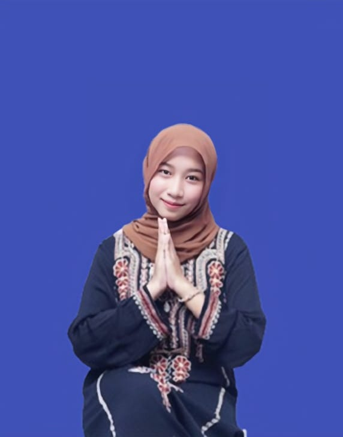
Waka Kurikulum
Waka Sarana & Prasarana
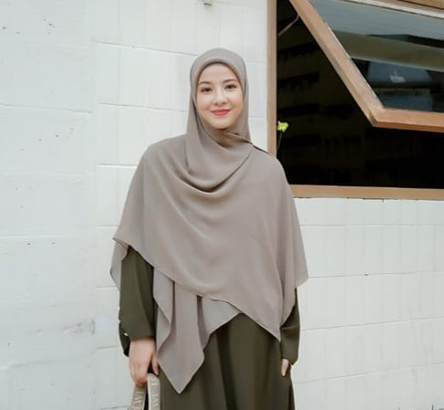
Bimbingan Konseling
Tata Usaha
SMA Qolqolah 89 Blitar menerapkan Kurikulum Merdeka yang berorientasi pada karakter, kompetensi, dan prestasi peserta didik.
Implementasi Kurikulum Merdeka Fase E & F dengan pembelajaran berdiferensiasi dan bermakna.
Modul ajar, LKPD, buku teks, serta media pembelajaran berbasis teknologi digital.
Program P5, literasi, olimpiade, riset siswa, serta persiapan UTBK dan SNBT.
Program Unggulan SMA Qolqolah 89 Blitar Dalam Membentuk Generasi Beriman, Berprestasi, dan Berdaya Saing Global.
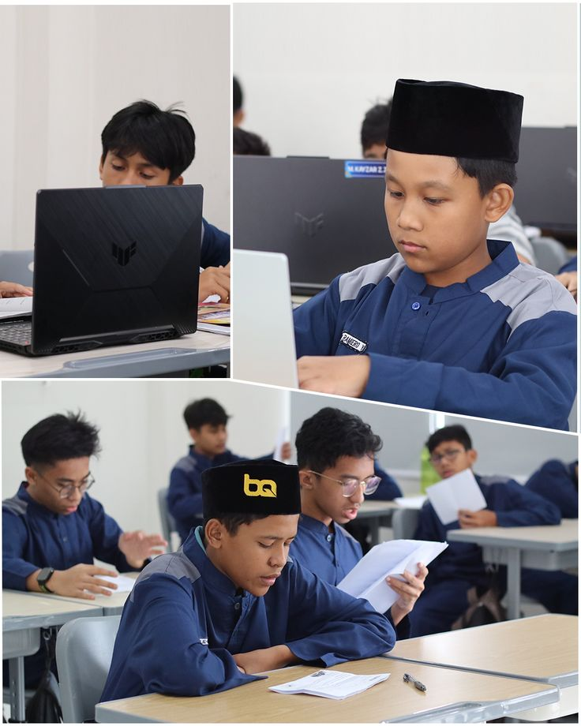
Pembinaan hafalan Al-Qur’an dengan bimbingan ustadz/ustadzah berkompeten dan terjadwal.
Baca Selengkapnya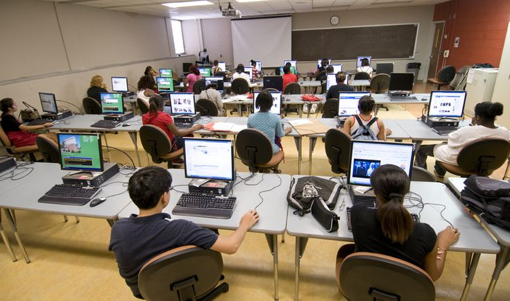
Penguatan kemampuan teknologi, media digital, dan etika bermedia untuk siswa.
Baca Selengkapnya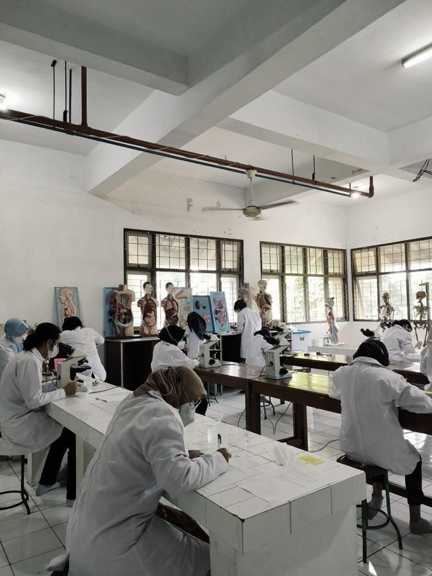
Pembinaan olimpiade, riset siswa, dan persiapan lomba akademik tingkat regional hingga nasional.
Baca SelengkapnyaKami menghadirkan pendidikan berkualitas yang seimbang antara iman, ilmu, dan prestasi untuk menyiapkan generasi masa depan.
Pendidikan yang mengintegrasikan ilmu pengetahuan dengan pembentukan akhlakul karimah dalam kehidupan sehari-hari.
Pembinaan akademik dan non-akademik yang berkelanjutan untuk meraih prestasi tingkat regional dan nasional.
Penguatan literasi digital, bahasa, dan kompetensi abad 21 agar siap bersaing di tingkat global.
Informasi dan dokumentasi kegiatan terbaru SMA Qolqolah 89 Blitar.
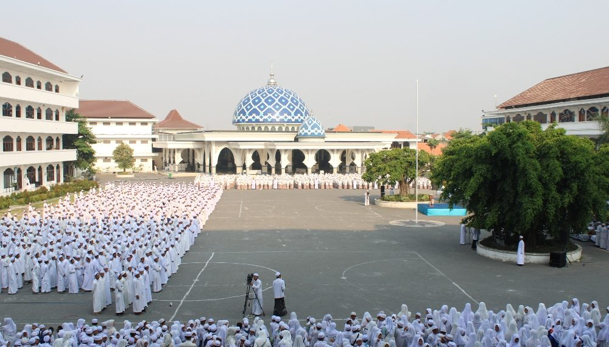
Pelaksanaan upacara bendera sebagai bentuk penanaman nilai disiplin dan nasionalisme siswa.
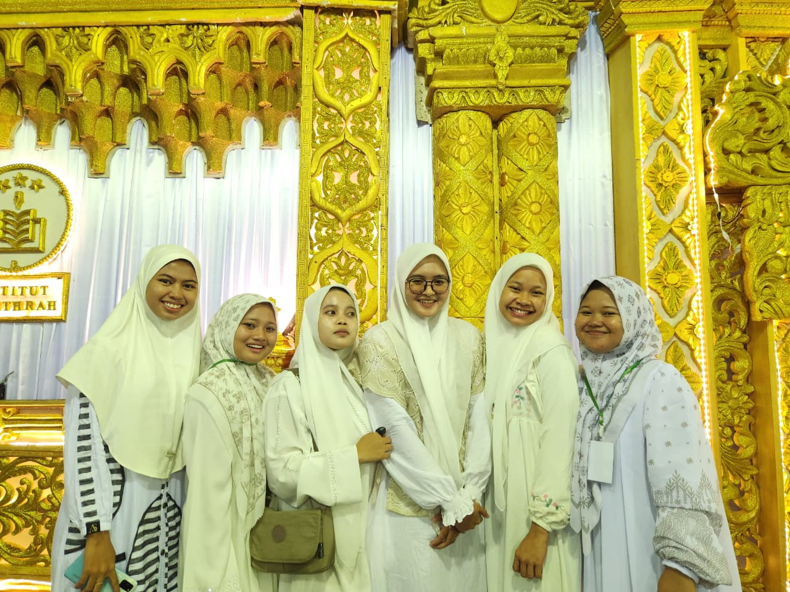
Kegiatan Maulid Nabi Muhammad SAW yang diisi dengan ceramah dan lomba islami siswa.
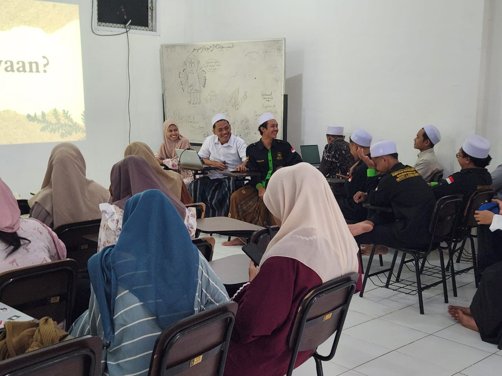
Kegiatan class meeting dilaksanakan untuk mempererat kebersamaan antar siswa.
Fasilitas lengkap dan representatif untuk menunjang proses pembelajaran, pengembangan bakat, dan kenyamanan peserta didik.
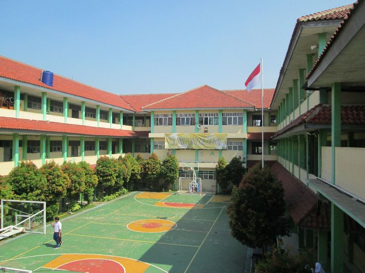
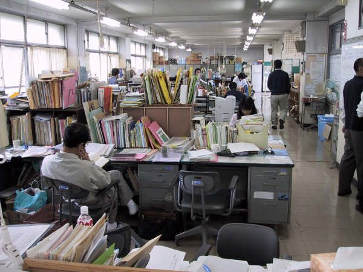
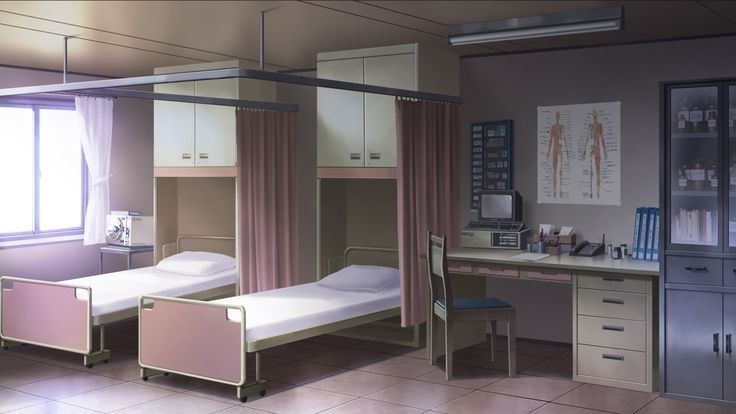
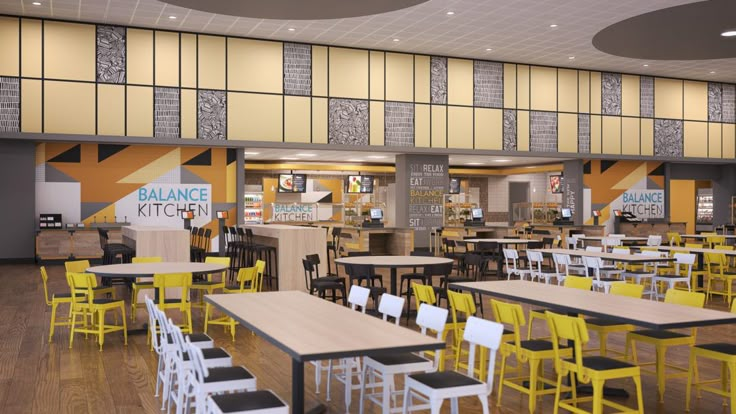
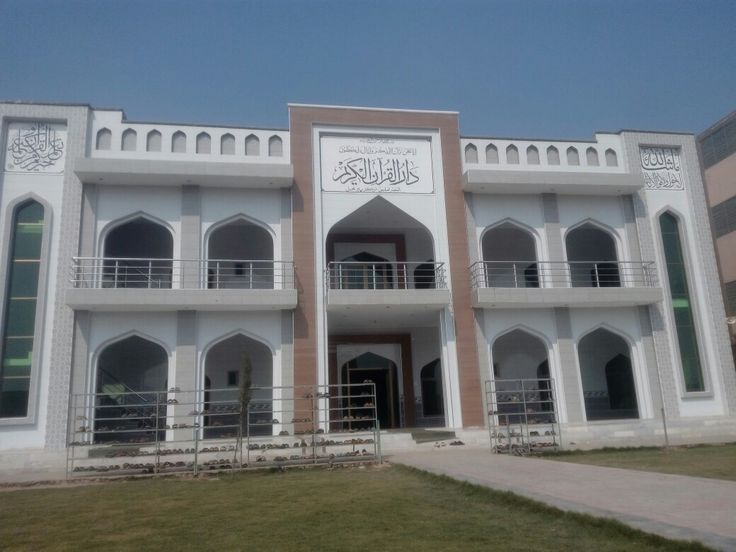
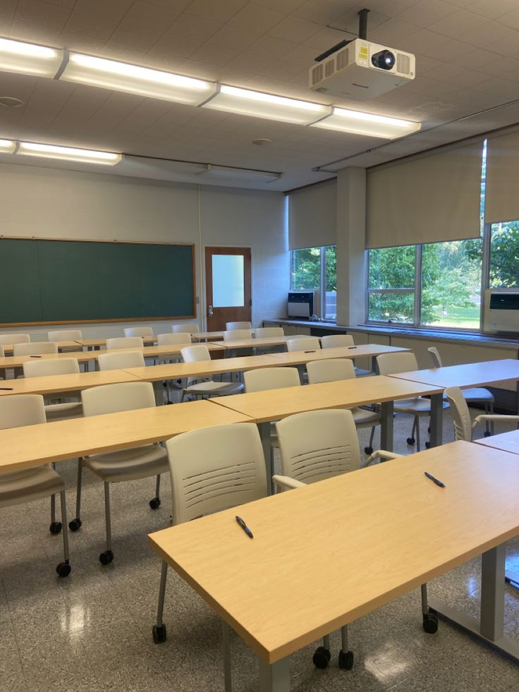
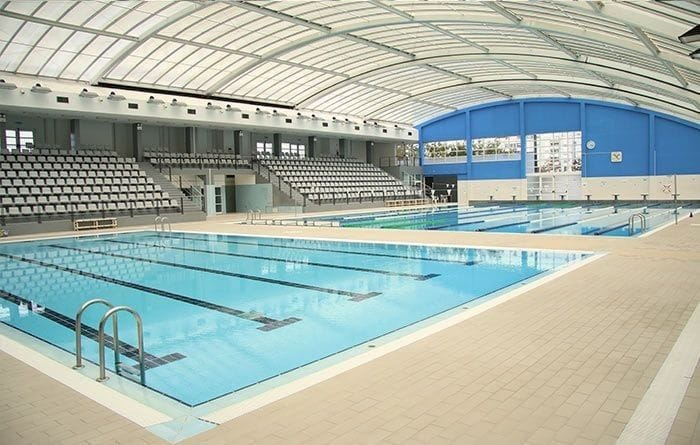
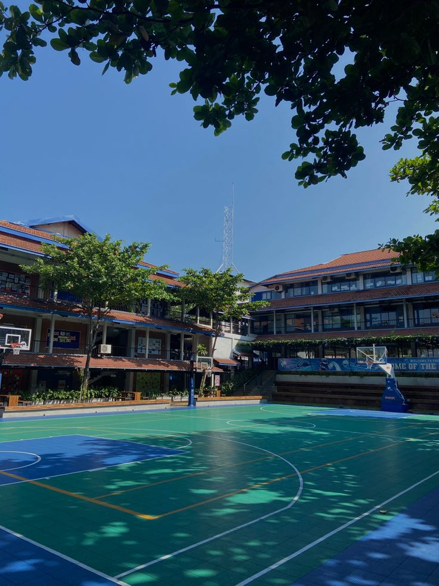
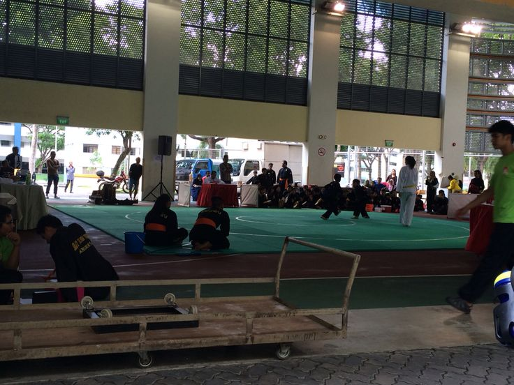
Jl. Garuda No. 89, Blitar, Jawa Timur, Indonesia 8945
(031) 453-893
info@smaqolqolah89.sch.id